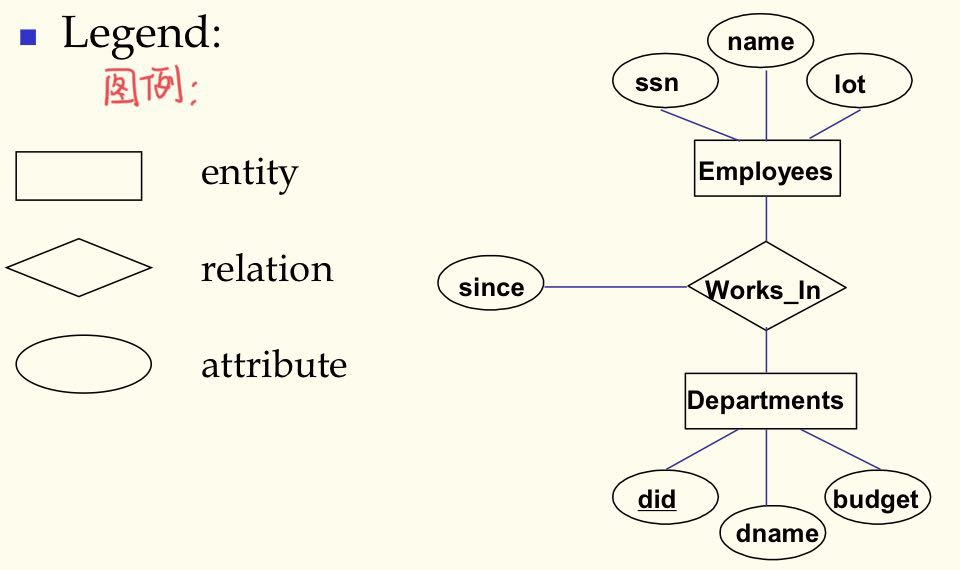

数据库管理系统第一，二，三章笔记
数据库原理第一二三章
1.1 介绍
Database&DBMS
- 数据库：A very large, integrated collection of data
- 数据库系统： 一个设计来储存和管理数据库的软件包
- 文件与数据库的区别
- 数据量大
- 不同查询不同的代码
- 必须保持数据不变由于多位并发用户
- 奔溃能恢复
- 安全与访问控制
- 为啥用数据库系统
- 数据独立性与高效访问
- 减少应用开发时间
- 数据集成性与安全性
- 统一的数据管理员
- 并发访问，奔溃恢复
Data, Data Model and Data Schema
- 数据：描述现实世界的符号
- 数据模型：描述数据的一组概念和定义
- 数据模式：对给定的数据模型的具体描述，数据模型的实例化
三层抽象架构(ansi-sparc architecture)及其对数据独立性的支持
Schemas are defined using DDL
Data is modified/queried using DML
-
views:描述用户所看见的数据
-
conceptual(logical) schema:定义数据的逻辑结构
-
physical schema:描述文件与索引怎么用的

-
数据的独立性:
- Applications insulated(绝缘的) from how data is structured and stored
- Logical data independence: Protection from changes in logical structure of data
- Physical data independence: Protection from changs in physical structure of data
数据库系统
-
数据库系统组成

- 组成：应用，DBMS,数据库，DBA
- DBMS 是数据库系统的核心
- 高级的用户接口
- 查询过程与优化
- 目录管理
- 并发控制与恢复
- 完整性约束检查
- 访问控制
-
数据库系统的生命周期
- 数据库系统规划
- 数据库设计
- 数据库的创建
- 数据库运行，管理与维护
- 数据库的扩充与重构
2.1 层次数据模型
基本概念
- 记录：描述事物与他们之间关系的数据单位，存储的数据单位,由多个字段构成
- 字段：简单的数据类型
- PCR(双亲子女关系，1:N 的关系)
- 分层模式：包含多对 PCRs，树状结构
拓展
- 虚拟记录：将层次数据模型推广到非层次型的数据（存在数据冗余）
- 多对多的关系(M:N)
- 一个记录型是两个以上的PCR的子女
- 多元关系

- 避免数据冗馀：只存一份记录，其他引用地方用指针代替。用指针代替的记录叫虚拟记录

- 大量指针增加数据库开销，数据模式也不够直观清晰
2.2 网状数据结构：不做要求
2.3 关系数据模型
关系型数据库的特点
- Based on set theory, high abstract level
- Shield all lower details, simple and clear, easy to understand
- Can establish new algebra system – relational algebra
- Non procedure query language – SQL
- Soft link – the essential difference with former data models

简单的概念们
属性和域
- 每个属性对应的值的集合是为取值的范围即为域
关系和元组
- 关系：就是表,属性是列，元组是行
- 关系的模式或型(schema)
- $R = (A_1, A_2…A_n)$称为关系R的schema
- $A_i$是属性名
- n称为关系的目
- 元组
- $r(R) = { t_1, t_2, …t_m}$,关系R表示为r,为n目元组的集合
- $t = <v_1, v_2, …, v_n> v_i \in D_i$ 每个元组表示为t，D是域
键：
- 候选键： 某一属性或一组属性唯一的决定了一个元组,且其任何真子集无此性质
- 主键：候选键中的一个
- 全键(all key):若主键由所有属性组成，则称为全键
- 候补键：候选键中除主键外的
- 主属性：包含在任何一个候选键的属性
- 非主属性：不包含在任何一个候选键的属性
- 超键：候选键的爸爸，包含候选键的属性组
- 外键：关系R1不是主键，关系 R2是主键，则其为关系 R1外键
最基本的三个完整性约束：
- 域完整性约束：属性值得在域中
- 实体完整性约束：一个关系内的约束，每个关系都要有一个主键，每个元组（实体）的主键值应唯一且不为 NULL
- 引用完整型约束：外键要么空缺，要么引用实际存在的主键值
关系代数
基础操作：(完整的操作集合)
- 选择($\sigma$) : 选择几行，后面是布尔表达式
- 投影($\pi$) : 选择几列，后面也是布尔表达式
- 笛卡尔积($\times$): 连接两张表
- 集合差(-): 就是集合的差，韦恩图都懂的
- 并($\cup$) : 集合的并嘛
额外操作：
- 连接($\Join$) : $R \Join_C S = (R\times S) $; C是连接条件
- 除($\div$) : 除以自己有的，没的直接删

- 外连接:
- 左外连接($*\Join$) :连接结果只保留左关系的所有元组
- 右外连接($\Join*$) :连接结果只保留右关系的所有元组
- 全外连接($\Join$) : 保留左右两关系的所有元组

- 外并($\underline{\cup}$): 对非兼容的两个关系也可以并，那些元组中没有的属性就填 NULL

关系演算
关系代数表示关系操作，须标明关系操作的次序，注重过程
关系演算只要说明所要得到的结果，不必标明操作过程，注重结果
- 元组关系演算
- 域关系演算
2.4 ER数据模型(实体联系数据模型)
是上面三种传统数据模型互相转换的中间模型
ER 图
- 矩形：实体
- 菱形：关系
- 椭圆： 属性

2.5 面向对象数据模型（没细讲）
其他数据模型
- 基于逻辑的数据模型
- 时态数据模型
- 空间数据模型
- XML 数据模型